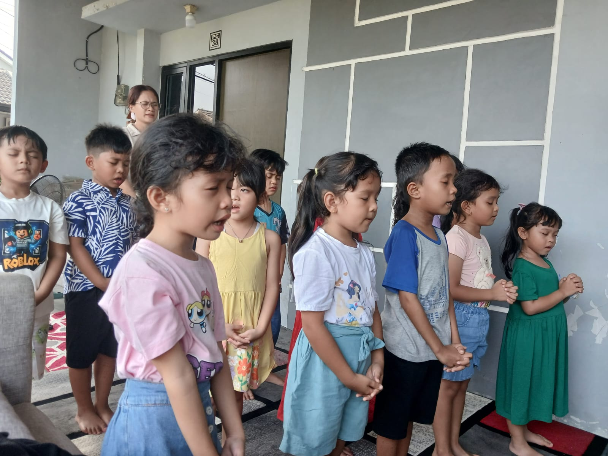
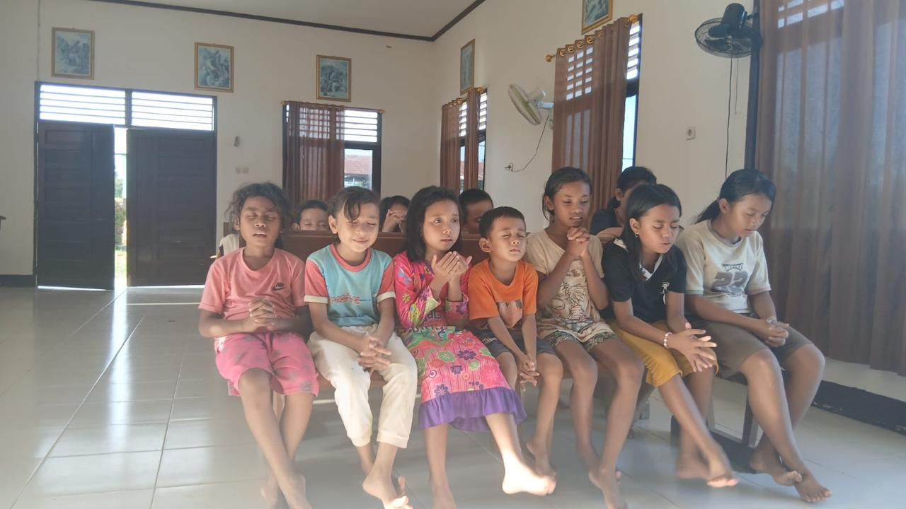
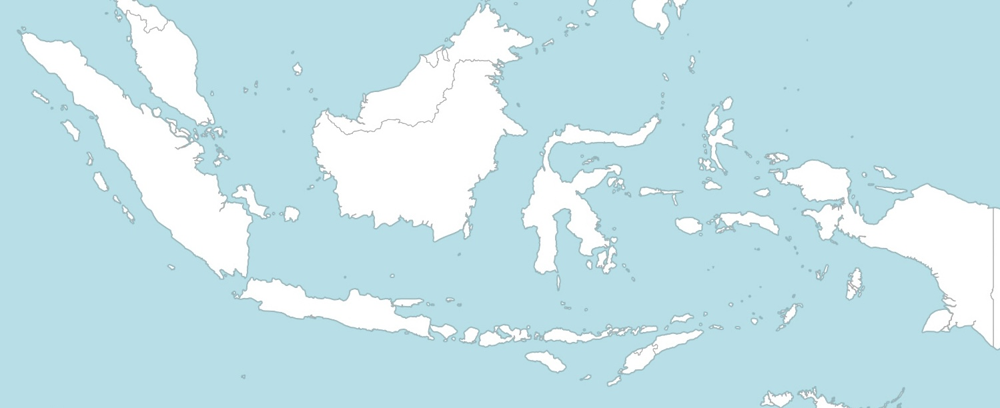
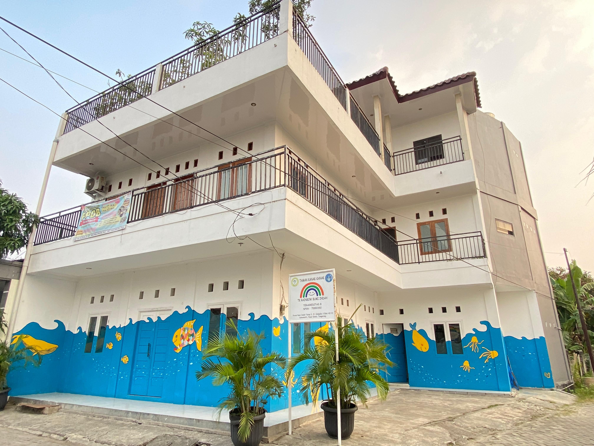
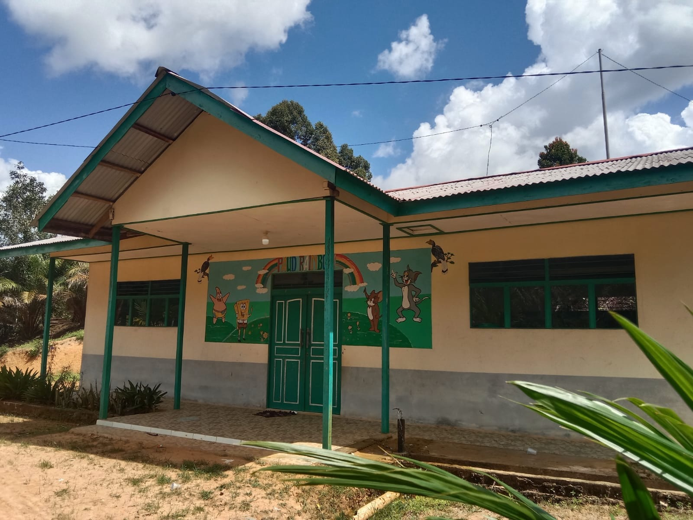

Our Locations
Inilah tempat-tempat pelayanan anak yang dilayani oleh BBG.
TK/PAUD
Lifekids Ministry



"Building Bright Generations for Christ"
Klik pada pin untuk melihat detail lokasi pelayanan.



Inilah tempat-tempat pelayanan anak yang dilayani oleh BBG.

